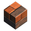
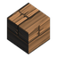
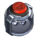

Fish¶
Every catch in Survival Frontier. Where is the distance from the crash site; Commonness is the fish's weight in the catch table (higher is more common, compared against the other fish that can bite at that spot). How to fish is on the Fishing page.
Species¶
| Fish | Water | Where | When | Size | Min. rod | Weight (kg) | Fight | Fillets | Commonness | Needs |
|---|---|---|---|---|---|---|---|---|---|---|
| Water | Near (under 600 m) | Any time | Small | Fishing Rod | 0.2-0.9 | - | 1 | 100 | - | |
| Water | Near (under 600 m) | Any time | Small | Fishing Rod | 0.8-3.0 | - | 2 | 90 | - | |
| Water | Near (under 600 m) | Night | Small | Fishing Rod | 0.3-1.2 | - | 1 | 45 | - | |
| Water | Mid (600-2500 m) | Day | Small | Fishing Rod | 0.6-2.4 | - | 2 | 55 | - | |
| Water | Far (2500 m+) | Any time | Big | Carbon Rod | 4.0-14.0 | 55% | 4 | 30 | - | |
| Water | Far (2500 m+) | Dusk | Big | Frontier Rod | 25.0-80.0 | 85% | 10 | 6 | Prime Bait, Legendary | |
| Chemical | Near (under 600 m) | Any time | Small | Fishing Rod | 0.2-1.0 | - | 1 | 100 | - | |
| Chemical | Near (under 600 m) | Night | Big | Carbon Rod | 2.0-9.0 | 50% | 3 | 35 | - | |
| Chemical | Far (2500 m+) | Any time | Small | Fishing Rod | 0.1-0.4 | - | 1 | 20 | - | |
| Crude oil | Near (under 600 m) | Any time | Small | Fishing Rod | 0.1-0.5 | - | 1 | 100 | - | |
| Crude oil | Mid (600-2500 m) | Any time | Big | Carbon Rod | 3.0-12.0 | 45% | 4 | 50 | - | |
| Crude oil | Far (2500 m+) | Night | Big | Frontier Rod | 40.0-120.0 | 90% | 12 | 5 | Prime Bait, Legendary |
Fight is how hard a big fish pulls on the line; small fish don't fight.
Rods¶
| Rod | Tier | Hook window | Safe zone | Fish climb | How to get it |
|---|---|---|---|---|---|
| 1 | 1.2 s | 34% | 55% | Crafted at the Workbench or Craftbot | |
| 2 | 1.6 s | 44% | 42% | Crafted at the Craftbot; recipe from the Traveling Trader (Uncommon blueprint Carbon Rod, 72 scrip, needs Customer reputation) | |
| 3 | 2.0 s | 52% | 34% | Not craftable |
A longer hook window gives you more time to react to a bite; a bigger safe zone and a slower climb make the reeling fight easier. Details on the Fishing page.
Bait¶
| Bait | Bite time | Boosts | Recipe |
|---|---|---|---|
| ×0.7 | - | Workbench: |
|
| ×0.7 | Moonfin ×2.5, Sludge Eel ×2, Three-Eyed Tetra ×3 | Workbench: |
|
| ×0.6 | - | Workbench: |
Bite time multiplies how long you wait for a bite (lower is faster). Legendary fish only bite on the bait listed for them.
Junk¶
12% of catches are junk instead of a fish. What you pull up depends on the water:
| Water | Junk (amount, share) |
|---|---|
| Water |  1-3× Scrap Metal Block (42%) 1-4× Scrap Wood Block (42%)1× Component Kit (12%) 1× Circuit Board (4%) |
| Chemical | 1-3× Chemicals (51%) 1-3× Scrap Metal Block (31%) 1× Component Kit (12%) 1× Circuit Board (6%) |
| Crude oil |  1-3× Crude Oil (54%)1-3× Scrap Metal Block (30%) 1× Component Kit (10%) 1× Circuit Board (6%) |
Sunken Crates¶
Sometimes the line brings up a Sunken Crate instead of a fish: 2% of catches near the crash site, 4% mid-range and 6% far out. It holds epic loot-crate loot, and far out there's a 5% chance it also holds a Backpack Expansion.